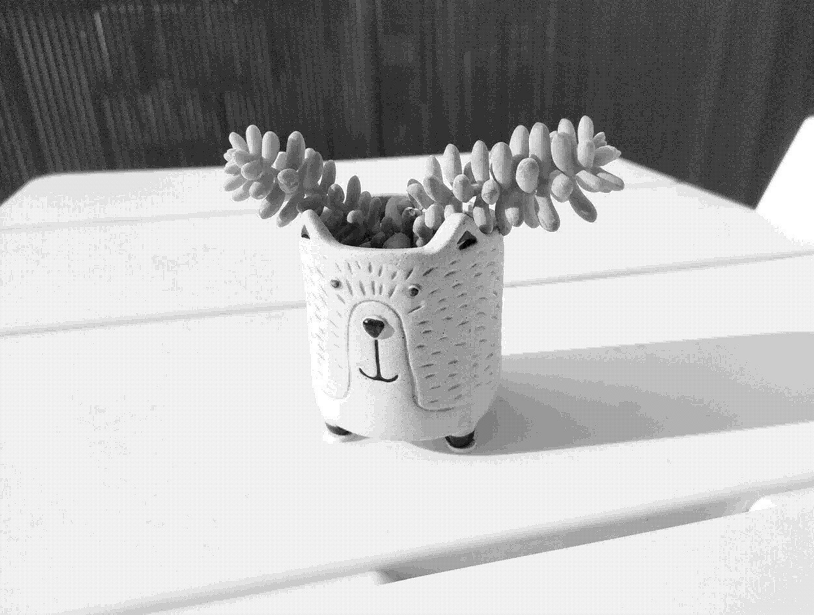

Sedum burrito

Care
A succulent whose stems hang vertically. Basically a dreadlocks plant.
- Minimum temperature of 5-7°C, ideal temperatures between 15-25°C
- Best grown in full sunlight with reasonable heat
- Avoid excess water: only once every 10 days and less during winter and fall, can suffer if soil is moist for too long
- Leaves break very easily
- Propagate through leaves on its own, very easy to grow new ones